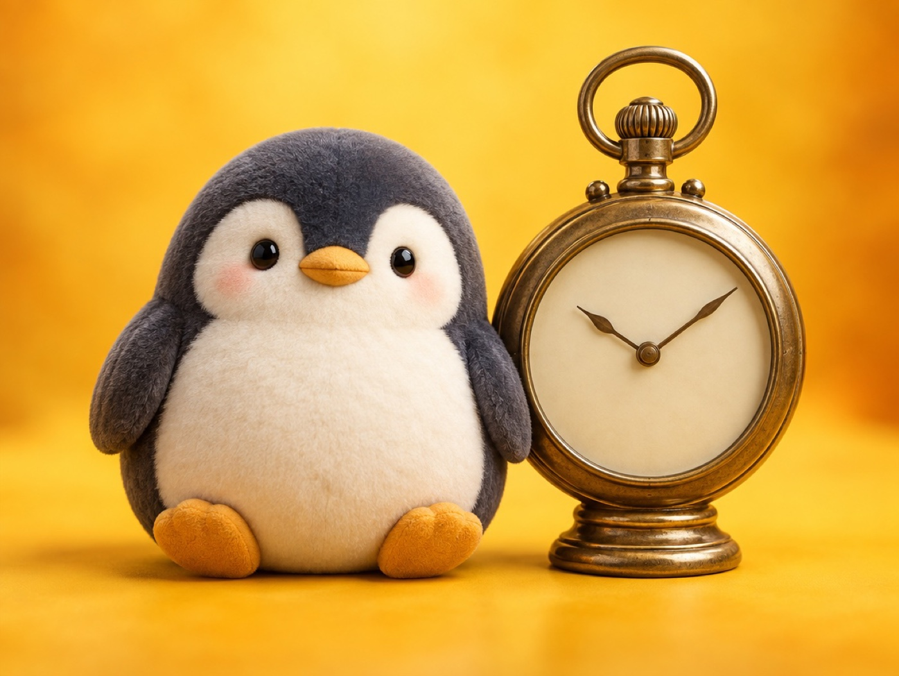

🧪 LAB · 試作 — AIが読書メモから一気に作った記事です。本番の一覧には出していません · 試作の一覧
🐧 EVERYDAY LIFE⚡ 40 SEC
Life is about 700,000 hours, and time is the money of your life ⏳

Sound Familiar
Do you ever look at your phone and suddenly notice that 1 hour has passed?
Big Number
80 years of life is about 700,000 hours.
The Point
Time is like money made of your life.
And you can earn money again, but time you use never comes back.
⚡ TRY IT
⏳ Your time wallet
Set your age. Then spend 1 hour and see what you get.
30years old
🪙 Hours left until 80
438,000
Out of about 700,000 hours in life
Spend 1 hour on…
🧾 What you got
😞 A bad mood×0
🧠 New ideas×0
✨ A clean room×0
🌿 A fresh head×0
🧾 You paid your hours… just to feel bad.
🧾 Nice shopping! Your hours bought good things.
For Example
For example, if you watch dark news for 1 hour and only feel bad, that is a waste.
If you read a book or take a walk in the same 1 hour, you get new ideas or a fresh head.
Small Adds Up
Small bits of time also become big when they add up.
Even 30 minutes a day becomes 45 hours if you keep it up for 3 months.
Try This
Try choosing what to use today's 1 hour for.
📚 I wrote this from my reading notes.